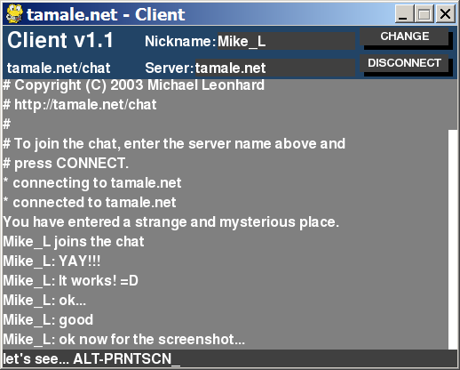

Client.py is a simple chat client written in Python. It requires:
Server.py is a single threaded chat server. All it does is relay incoming data to all connectsions. It requires inetcomms.py.
inetcomms.py is a module for internet clients and servers.
Widgets.py is a GUI widget module that uses PyGame.
Widgetsdemo.py shows off the capabilities of Widgets.py
The chatsystem archive contains the latest versions of all of these files.
All of these programs are Copyright (C) 2003 Michael Leonhard
These programs are put in the public domain.
Questions may be sent to me by email: client at tamale dot net
Due to a request from Nathan Lanyon, these programs are also be available under the GNU General Public License. You may choose to license this software from me or just take it as public domain software. Whichever method you choose, know that the software comes with no warranty.
| Name | Date | Size |
| chatsystem-1.2.tar.gz | 2003-07-28 | 14 KB |
| client.py | 2003-07-28 | 13 KB |
| inetcomms.py | 2003-07-28 | 8 KB |
| server.py | 2003-07-07 | 3 KB |
| widgets.py | 2003-07-06 | 28 KB |
| widgetsdemo.py | 2003-07-06 | 4 KB |
Copyright © 1999-2012 Michael Leonhard